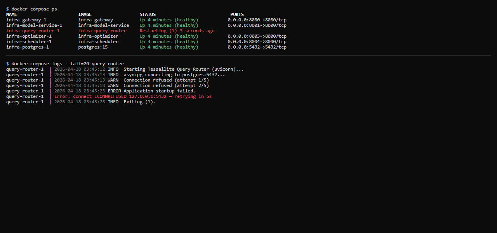

Service Not Starting

What this covers
Diagnosing a Tessallite service that fails to start, exits immediately, or restarts in a loop. This article applies to Docker Compose deployments.
General diagnostic approach
- Check status:
docker compose ps— look for Exit or Restarting status. - Read logs:
docker compose logs --tail=50 SERVICE_NAME - Fix the underlying cause (see table below).
- Restart:
docker compose restart SERVICE_NAME - Verify:
docker compose ps— confirm the service shows Up.
Check the health endpoint after services are up:
curl http://localhost:3000/api/healthA response of {"status":"ok"} confirms the Frontend service is running and can reach the database.
Common causes by service
| Service | Symptom | Likely cause | Fix |
|---|---|---|---|
postgres | Exits immediately | Data directory permissions wrong or volume initialised with different user | docker compose down -v && docker compose up -d (warning: deletes all data volumes) |
model-service | Restarts in loop | Cannot connect to internal PostgreSQL — wrong DB_HOST, DB_USER, or DB_PASS | Verify env vars in .env. Start postgres first, wait for healthy status, then start model-service. |
gateway | Exits with "address already in use" | Another process holds port 5433 or 8080 | Stop the conflicting process, or change GATEWAY_PORT_JDBC / GATEWAY_PORT_XMLA in .env. |
frontend | Exits with "SESSION_SECRET not set" | SESSION_SECRET env var missing from .env | Add SESSION_SECRET=<long random string> to .env and restart. |
scheduler | Restarts after a few minutes | Cannot connect to target schema or source database | Verify source connection params and target schema permissions. See Aggregates Not Building. |
| Any service | "Cannot connect to postgres" on startup | Service started before postgres was ready | docker compose restart SERVICE_NAME once postgres shows healthy. |
Startup order
On first run, postgres takes 10–20 seconds to initialise. If multiple services fail simultaneously after a fresh install:
docker compose up -d postgres
docker compose ps # wait until postgres shows (healthy)
docker compose up -d